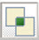
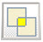
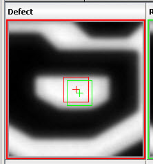

Image Measurement Modes
Fixed Mode
In Fixed Mode, any action applied on an image is applied to all images displayed in the IMU window.
If the image view (refer to “Performing Operations in the Image Display Units” for more details on image views) is changed on one image, then the image view is changed on all the images present in the Image Measurement.
The following menu items in Free Mode (accessed from a right-click menu in the display unit) behave differently in Fixed Mode:
Cross Section
If Cross Section is enabled in Fixed Mode, then cross section analysis (refer to “Cross Section Analysis”) is performed on the defect image, reference image, and the functional images. Any changes on the cross section bar such as a resize, rotate, and move are applied to all cross section bars on all images.
Display Contact
If Display Contact is enabled, then contact measurement analysis (refer to “Contact Measurement”) is performed on the defect and reference images. Any changes on the contact measurement box such as a resize and move are applied to all contact measurement boxes on all images.
Fixed Mode also impacts what appears on context-sensitive right-click menus that appear when you click on an image. See “Performing Operations in the Image Display Units” for details.
In TransRef comparison mode, the following additional buttons are displayed in the toolbar of Fixed Mode:
Display Reflected Absolute Difference Image 
Display Reflected Absolute Signed Image 
Display Flux Area

Select Images for Flux Area

Display Defect Information

Free Mode
In Free Mode, actions are applied only to single image. If the image view is changed on any image, then the view is changed only on the selected image.
The following buttons are not available in the toolbar when set to Free Mode:
Display Cross Section Bar
Display Cross Section Enabler
Display Flux Area
Select Images for Flux Area
Display Contact Measurement Bar
The following options are still available from a popup menu that appears if you right-click in the image display unit. However, they will behave differently than in Fixed Mode.
Cross Section
If Cross Section is enabled in Free Mode, then two cross section bars are displayed on the image on which the Cross Section is enabled (note that they can be displayed on top of each other during the initial view). These cross section bars can be moved independently on the image. If either of the cross section bars are resized, then the other cross section bar is also resized accordingly.
Display Contact
If Display Contact is enabled in Free Mode, then two contact measurement boxes are displayed on the image. These contact measurement boxes can be moved independently on the image.
Figure 3. Two Contacts Displayed
Free Mode also impacts what appears on context-sensitive right-click menus that appear when you click on an image. See “Performing Operations in the Image Display Units” for details.